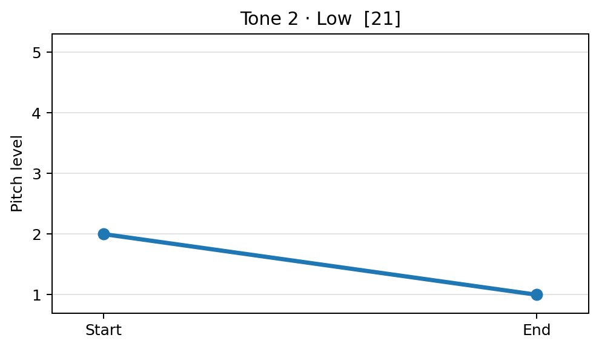
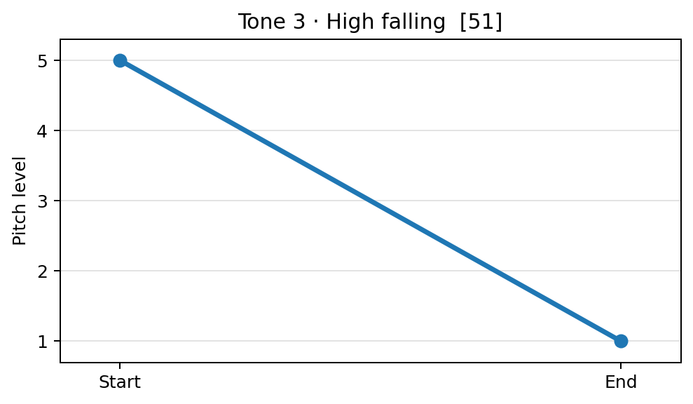
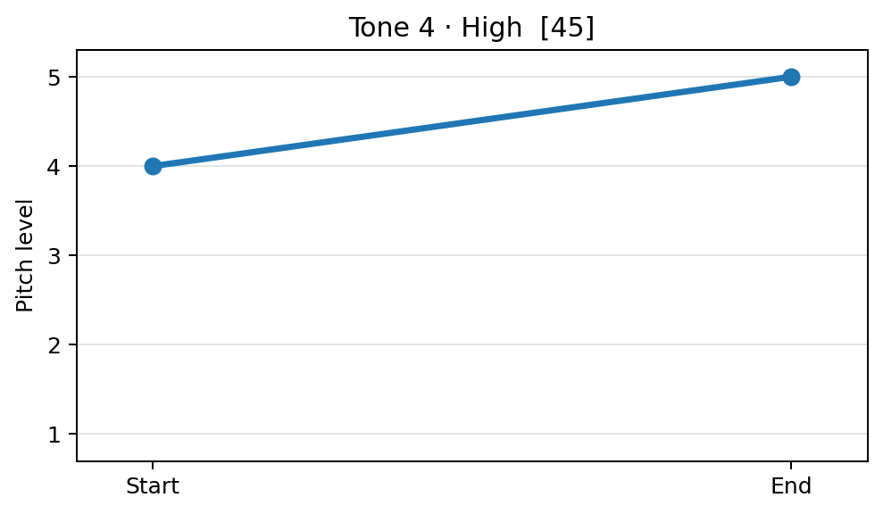
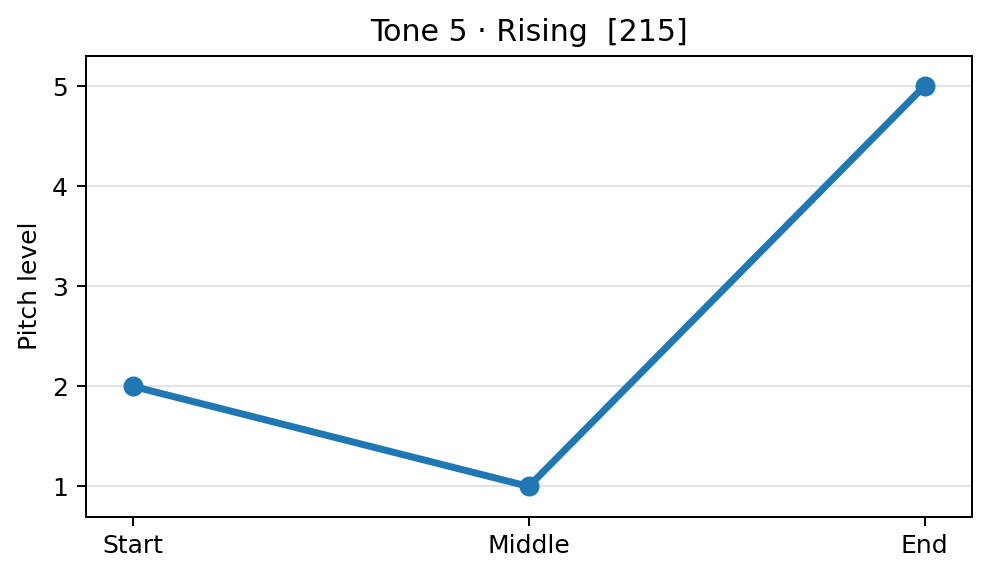

① 組合你的泰語音節
聲母類別與聲母按鍵
前引字／引導子音（可不選）
支援框架：ห นำ、อ นำ；可再擴充其他前引字規則。
複合聲母／子音連綴（可不選）
此處先提供常見真複合聲母組合；拼寫合法性與非發音引導子音將分開處理。
母音按鍵
韻尾按鍵
聲調符號
特殊拼字／拼字例外規則（擴充預留）
此區預留給未來加入固定拼寫例外、詞彙層級例外及自訂判調規則。現階段不會自動套用未經確認的例外。
資料欄位可規劃為 pattern、scope、toneClassOverride、toneOverride、notes；需經規則校驗後才啟用。
③ 五種聲調運圖
依照你提供的調值表繪製；縱軸為 1–5 音高級別，橫軸為發音時間。靜態圖片，沒有動畫。
第一聲 [33]
第二聲 [21]

第三聲 [51]

第四聲 [45]

第五聲 [215]
